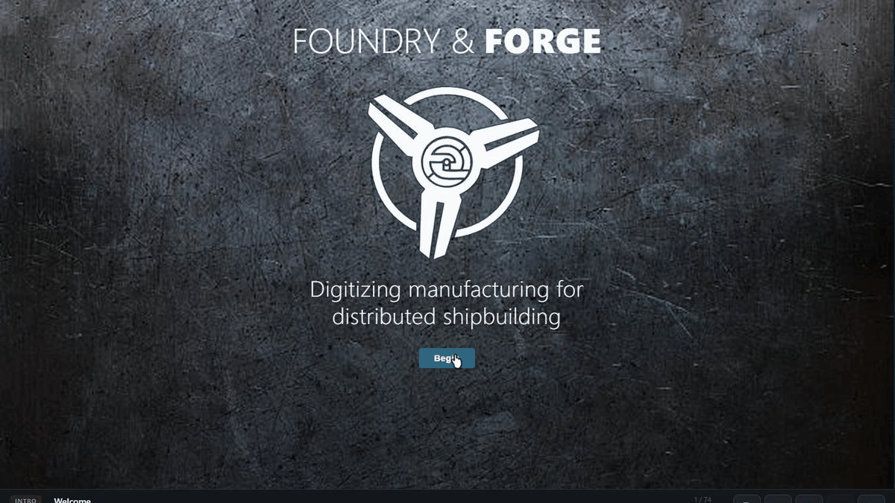
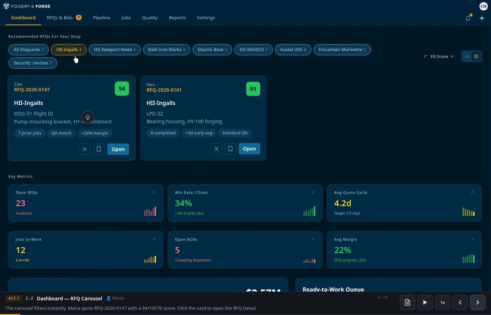
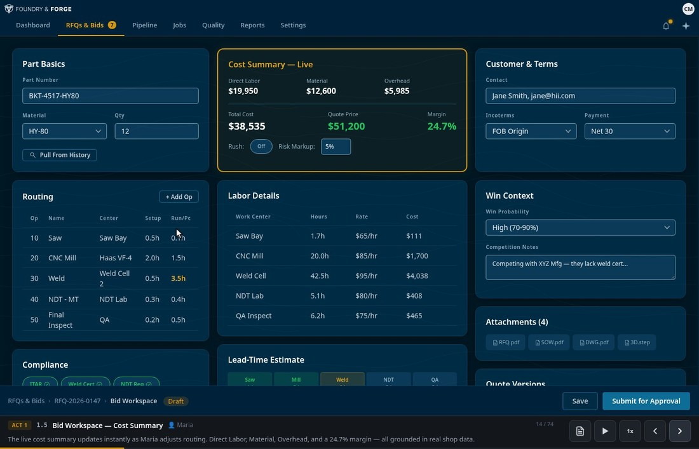
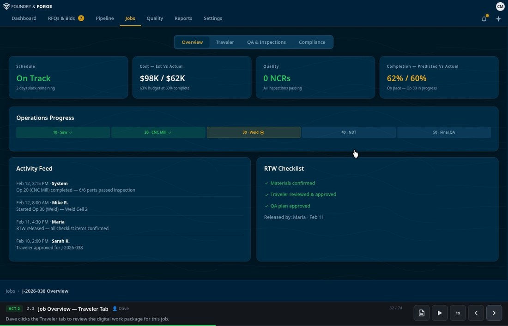
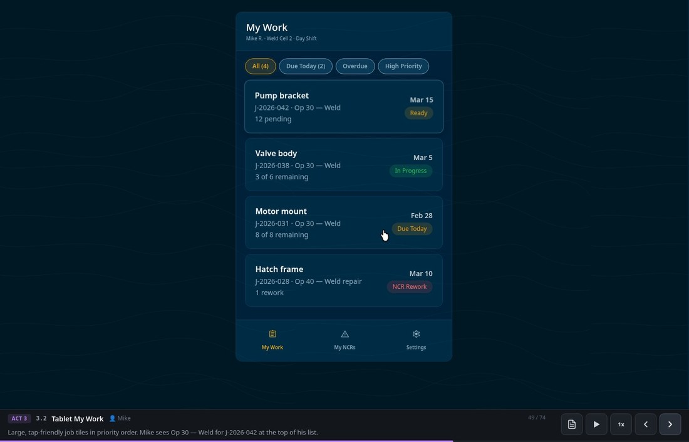
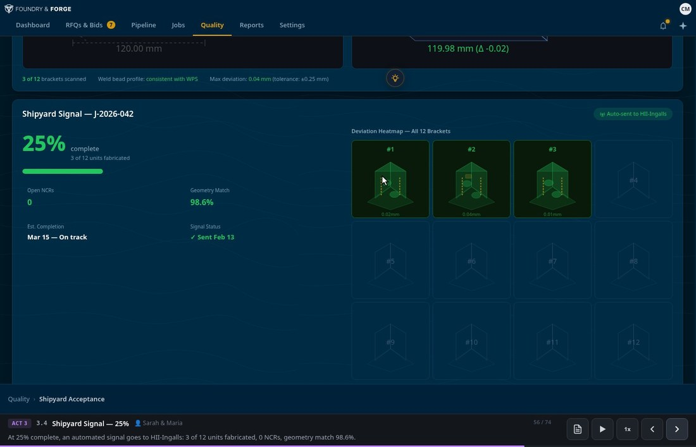
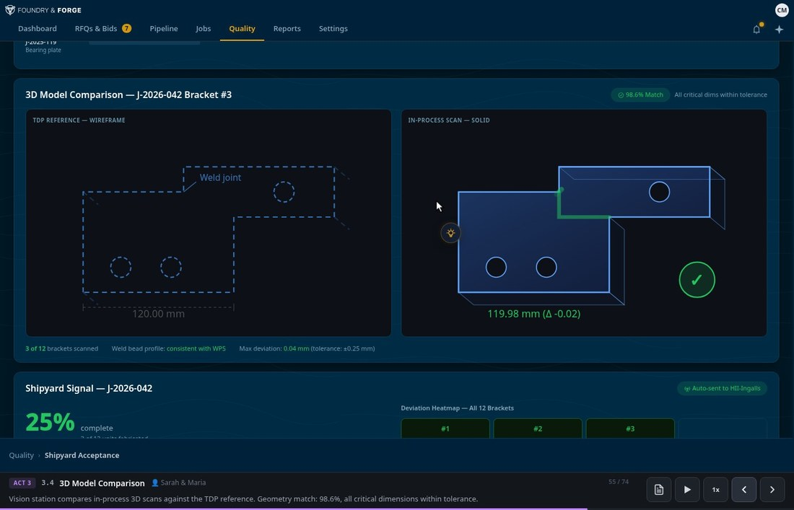

F2AI bridges the gap between shipyard demand and manufacturing capacity with engineering-grade tools designed for the deck plate.

Feature 01
Bid managers start each day with recommended RFQs, filtered by shipyard, fit score, and security alignment. Each opportunity surfaces a natural-language rationale showing why it matches your shop's proven capabilities — from historical TWP similarity to margin projections.
No more sifting through irrelevant solicitations. The scoring model ranks RFQs on capability match, profitability, and risk so your best people spend time building — not searching.

Feature 02
The full costing canvas — routing, labor, material, overhead — in one screen with live price and margin calculations. Production planners and bid managers work from historical data pulled automatically, with past routings, cycle times, and actual costs as reference.
Quotes that once took days compress into hours. Compliance fields, lead-time estimates, and quote approvals are built in — ready for Navy work from day one.

Feature 03
When a bid is awarded, one click converts it into a NAVSEA-compliant digital traveler carrying the part from award through shipyard acceptance. Materials, QA plans, and work instructions are validated through an RTW checklist before work hits the floor.
Quality engineers author TDP-aligned content with embedded 3D models, weld procedures, and inspection forms. The traveler meets MIL-STD-31000B requirements by design — not as an afterthought.

Feature 04
Machinists and welders get a minimal, tap-friendly interface showing today's work in priority order. Large tiles, clear due dates, and one-tap actions for clock-in, hold, and NCR capture. No nested menus, no training overhead.
When issues arise, operators capture photos and notes in seconds — stopping defective work early before it compounds into costly rework downstream.

Feature 05
Automated progress updates flow back to the shipyard with zero disruption to the shop floor. As parts are fabricated and scanned, F2AI generates a structured signal — completion percentage, geometry match, NCR status, and estimated delivery — sent directly to the yard.
Shipyards gain the visibility they've never had into vendor progress, while manufacturers keep building without stopping to prepare status reports. The signal replaces uncertainty with a predictable data stream the yard can plan against.

Feature 06
From our development facility in Austin, TX we are building and integrating engineering-specific ML models purpose-built for shipbuilding manufacturing. 2D and 3D vision transformers enable similarity comparison between parts — matching new RFQs to historical builds by geometry, tolerances, and process characteristics to accelerate the bid process.
Stereo vision paired with model-to-scan comparison gauges build progress in real time, measuring fabricated parts against TDP reference geometry to surface deviations before they become costly rework.

Who it serves
Four roles, one connected workflow — from bid discovery to shipyard acceptance.
Reviews AI-scored RFQs, decides bid/no-bid, and drives quotes through costing and approval with full historical context.
Converts awarded bids into scheduled jobs, assigns routings and work centers, and protects critical Navy delivery dates.
Authors TDP-compliant travelers, manages TIP/QAP content, monitors NCRs, and builds acceptance packages for the shipyard.
Follows step-by-step digital travelers on a tablet, clocks time, logs inspections, and flags non-conformances with one tap.
F2AI is actively developing the Alpha platform and aforementioned features with select manufacturing partners. Request early access to the platform, or connect with us to explore having your specific solutions available on F2AI.
No spam. We'll reach out when your slot opens.